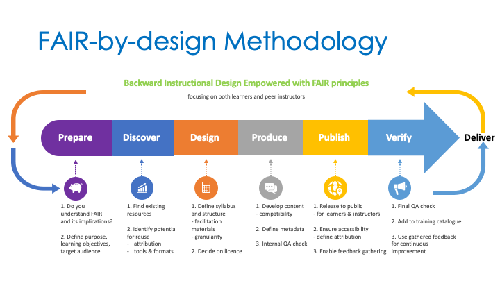

Welcome
Introduction
Learning Objectives
- Describe the FAIR-by-design methodology
- Identify FAIR design challenges
Target Audience
- attendees of the FAIR-by-Design ToT live webinar
Duration
- 30 mins
Prerequisites
- familiarity with the published D2.2 FAIR-by-Design Learning Materials Methodology
Learning Tools
- training BBB room
- Menti
Participants
The training is focused on all Skills4EOSC project members that will need to develop learning materials for the different types of trainings envisaged within the project. No previous knowledge of FAIR materials development is required to follow the training. The training will be delivered by a set of trainers each focusing on different aspects of the FAIR-by-design methodology for development of FAIR learning materials. In addition, there will be moderators to help out with the technical aspects and facilitators for any group activities.
Housekeeping
Participants can jump in during the training with a comment or question at any time using the provided chat or by opening their mics. Sharing personal experiences and recommending other tools and resources in addition to the examples provided during the training is strongly encouraged. The focus of the training is on hands-on practical implementation of the FAIR-by-design methodology. Thus there will be many activities that the participants will need to take active role in, aiming to test out the concepts and get a first hand experience. There will be short 15 mins coffee breaks after each hour-hour and a half of training. During the second full day of training, there will be an 1 hour break for lunch. Your feedback on this training is essential to improve it and provide you with additional examples and resources you might need during the FAIR learning materials development. Focusing on the co-creation process, in addition to the feedback form that is available on the course, there are many other ways to provide your feedback that will be presented during the training.
Main interaction
The main interaction with the participants will be via mics, chat, BBB quiz and Menti questions. A mini ice breaker is used to setup and test the interaction.
Training purpose
The main goal of the training is the practical implementation of the FAIR-by-Design learning materials methodology that has been developed by T2.3 and published in D2.2. The methodology extends the backward instructional design process with the FAIR principles aiming to ensure that the learning materials will be findable, accessible, interoperable and reusable from their conception and throughout their lifetime including updates, new versions, reuse, etc.

The methodology is composed of 6 main steps that are iteratively repeated within a continuous improvement loop: - Prepare - develop FAIR skills that will augment the traditional instructional design skills. These include FAIR principles, Intellectual Property Rights, licensing, attribution, permanent identifiers (PIDs) and metadata. - define the purpose, learning objectives and audience targets - Discover - identify existing learning materials - assess the potential for their reuse - Design - define the syllabus and create the learning materials structure - start a facilitators guide - ensure interoperability by choosing open licenses - Produce - use open authoring tools and formats - develop accessible content - define metadata - Publish - deposit the learning content for learners and for instructors - use PIDs - define access rights and provide attribution guidelines - enable feedback gathering - list in relevant catalogues - Verify - go through a quality assurance (QA) process to verify FAIRness Continuous improvement should be implemented to ensure the learning materials are up-to-date and gathered internal and external input has been incorporated. This includes: - analyze gathered feedback - initiate a new version development when necessary
Training objectives
Upon successfully completing the training the attendees should be able to: - Define FAIR learning objects - Adapt and mix FAIR learning objects - Identify licenses and attribute correspondingly - Structure comprehensive learning materials - Manage file formats and tools - Define metadata using a schema - Create and publish FAIR-by-Design learning materials - Collaborate with other instructors - Assess FAIR-ness of existing learning objects
Materials
The final formats of all materials are available on the Skill4EOSC learning platform within the FAIR-by-Design course. These include: - presentation slides - presentation notes - related templates - links for further reading - self-assessment quizzes
The course also includes the BBB room used for the training that will have the recordings from the training.
In addition there is also an open forum where any enrolled trainee can ask a question or start a discussion.
Finally, there is a feedback form that trainees are asked to fill out after the training so that the learning materials can be improved based on their feedback.
During the life training the materials will be revealed on a day-by-day basis as the training progresses.
To access the materials one must register on the learning platform and then self-enroll in the course.
Finally, the course offers the possibility to obtain a FAIR Instructor badge once all course activities have been successfully completed. You don't need to be part of the live webinar to obtain the badge. Go through the learning material on your own and complete the requirements to get the badge.
Training outline
The overall training is divided into three days that focus on different steps of the FAIR-by-Design methodology. Day 1 focuses on the concepts of the Prepare and Discover steps where you will need to ideate a new training and learn to assess the FAIR-ness of materials. Day 2 will then take you through the conceptualisation of learning materials, their design and development using different tools and format. And finally day 3 showcases how to publish the ready materials so that they are FAIR for both learners and other instructors. In the end we have the final verification process.
The everyday life of a FAIR instructor
What are the challenges instructors face while trying to make their developed learning materials FAIR?
Summary
The FAIR-by-Design Methodology training focuses on the practical implementation of the methodology helping instructional designers make their learning materials FAIR.